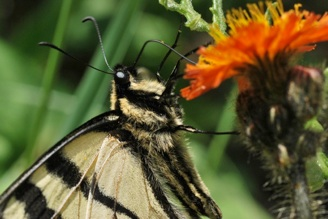
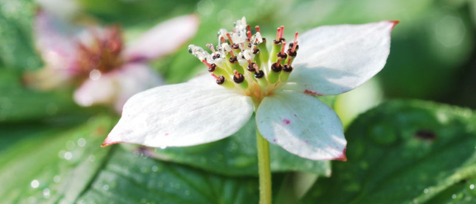

|
||||||||
| Courses |
||||||||
|  |
- Biol 1020 - Foundations of Biodiversity | |||||||
| - Biol 3190 - Wild Plants of Ontario | ||||||||
| - Biol 3170 - Plant Evolution and
Diversity |
||||||||
| - Biol 385x - Field Courses (via OUPFB) | ||||||||
| - Biol 4610 - Evolutionary Ecology | ||||||||
|  ©Marcel Dorken last updated: 01/2016 |
||||||||